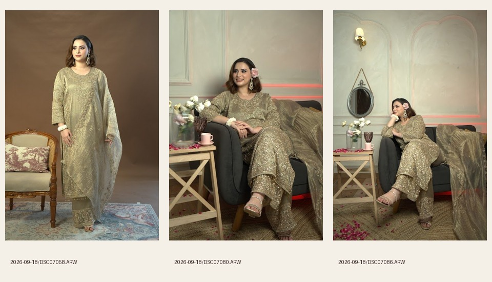
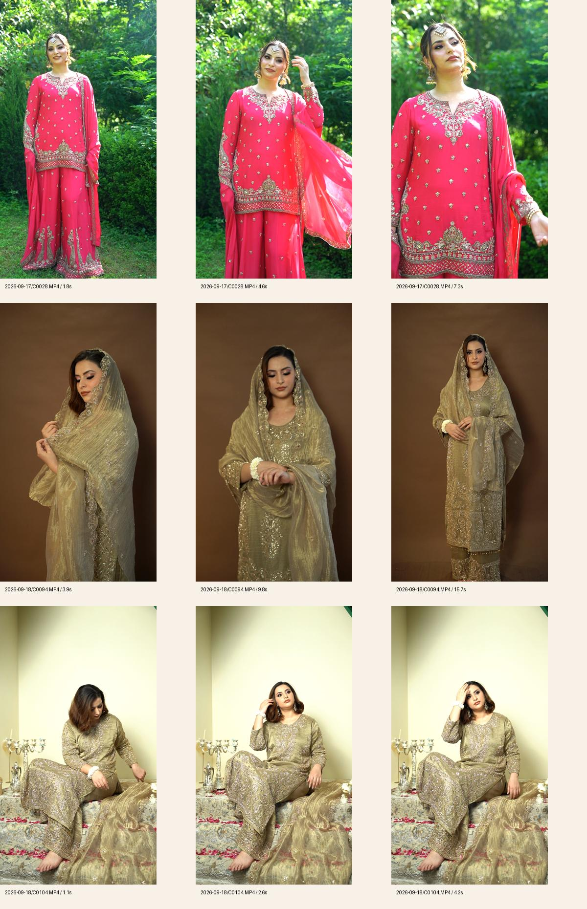

DSC07058: alternate standing silhouette. DSC07080: closer seated lifestyle view. DSC07086: wider seated composition. The final edit favours DSC07053 for its open pose and DSC07085 for the Journal, avoiding repetitive frames.

C0094.MP4, 3–11 seconds, supplies the optional olive-gold product film. C0028.MP4 and C0104.MP4 were sampled but remain unused. No workshop or photographed lehenga is represented by this shoot selection.
